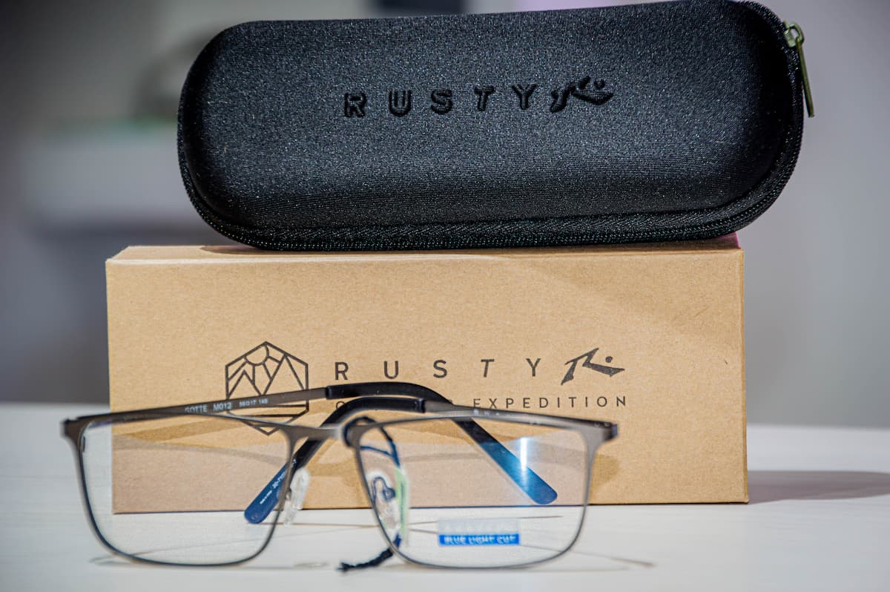
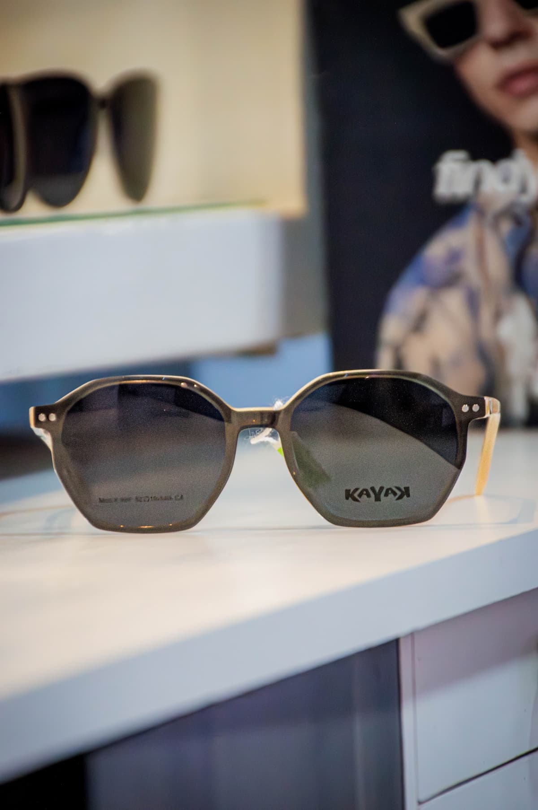

PUNTO DE VISTA

"Visión perfecta, estilo único"
En Punto de Vista, nos enfocamos en brindarte la mejor experiencia visual y estética. Nuestros anteojos son diseñados con la más alta calidad y estilo, para que puedas ver el mundo con claridad y elegancia.


Calidad profesional, atención personalizada
Somos uno de los pocos profesionales de la zona que realmente entienden la importancia de una atención personalizada y experta. Nuestros ópticos titulados te brindarán asesoramiento y cuidado personalizado para encontrar los anteojos perfectos para ti.